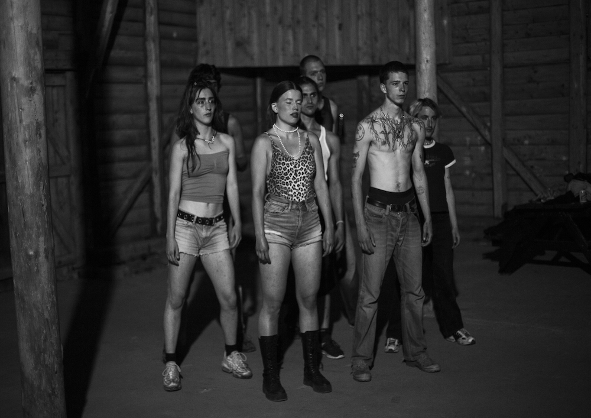
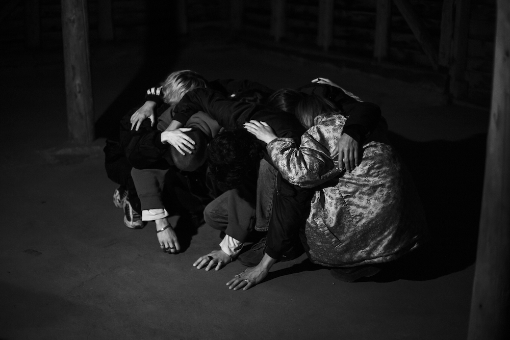
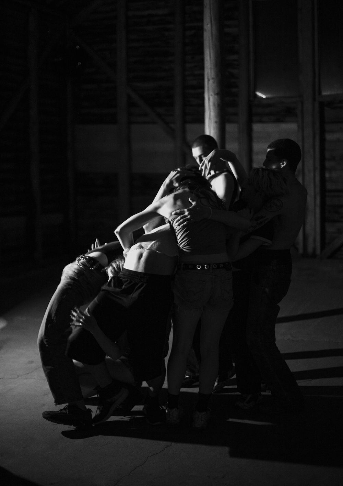

Liza De Maeyer and Astrid De Haes had the opportunity to work with dance and film for the very first time in the stunning ardennes together with seven gorgeous dancers. This has turned into an exhibition with film and photos. This exhibition is a portrait of our experiment and took place the 21 of november 2021 in Antwerp.



